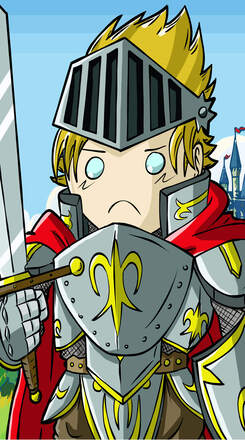

18 / 11 / 2020
Se lanzó “La Maldición”: el “Dark Souls” de los juegos de cartas diseñado en Argentina
La Maldición es un nuevo juego de cartas que llega de la mano de dos argentinos y que se sale un poco del molde. Lo jugamos y te contamos todo.
Seguro que más de una vez en tu vida te preguntaste “¿Qué pasaría si mezclo el juego de cartas UNO con Dark Souls?”. Bueno, eso mismo se preguntó Cristian Squitieri una noche antes de irse a dormir, allá por noviembre-diciembre de 2019. En vez de decir “Cristian, mañana trabajás, dejate de joder”, en su mente se quedó la pregunta y no tuvo más remedio que ponerse a escribir notas. Así creó las primeras ideas del juego. Como supo que esto iba a ser más complicado de lo que parecía, llamó a Ricardo Iassogna, un amigo de toda la vida y fanático como él de lo geek y lo nerd, para preguntarle si se sumaba al desafío de crear un juego de cartas. Ricardo no lo pensó dos veces y enseguida dijo que sí. Es así como tras un par de meses de diseño, testeo y prototipos llegaron a crear el juego de cartas La Maldición: Héroes de Lorthar, en marzo de 2020.

05 / 11 / 2020
Review Watch Dogs Legion: una variante ingeniosa del modelo Ubisoft
Watch Dogs Legion es más de lo mismo, pero su novedoso sistema de generación de personajes y efectivas herramientas de hacking lo elevan por sobre la media.
El héroe del videojuego combate en solitario, pero suele pertenecer a una organización. Una fuerza que justifica sus actos y le da un contexto a sus acciones. S.T.A.R.S, la Alianza Rebelde, y claro, ese viejo clásico de Ubisoft de los Asesinos y los Templarios.
Pero Watch Dogs Legion es algo especial. Una aventura para un solo jugador que no tiene un personaje como protagonista, sino una organización completa: cada habitante de esta Londres de mundo abierto es un miembro potencial de la organización hacktivista DedSec.
29 / 10 / 2020
Guía de Supervivencia de la Steam Sale: 7 consejos para aprovechar ofertas
El catálogo de Steam es enorme, y las “Steam Sale” (liquidaciones de fin de año) son tentadoras. En Gaming Cove te traemos una colección de tips que protegen la billetera del gamer.
Steam es el mejor negocio para el gamer argentino. Los precios localizados son los más bajos del mercado (contando tiendas de PC y consolas) y aún sumando los impuestos es fácil armar una colección de grandes juegos con lo que vale una novedad de PlayStation 4, Switch o Xbox One. En especial en las “Steam Sale”.
Temporadas de descuentos que duran unos días y que el servicio llama “Las Baratas”, pero nosotros conocemos como “Liquidaciones” o simplemente “las ofertas de Steam”.
28 / 10 / 2020
Guía de Trails: ¿Cómo empezar con la saga japonesa de juegos de rol de culto?
El secreto mejor guardado del gaming es una serie de JRPGs que trasciende el género. Anime, Game of Thrones, y un sistema de combate magistral.
Para un pequeño grupo de gamers fervorosos, el gran evento de 2020 no es el debut de Cyberpunk 2077 o la llegada de las nuevas consolas, sino el lanzamiento de The Legend of Heroes: Trails of Cold Steel IV, la entrega final de una saga japonesa de juegos de rol que cuenta la que posiblemente sea la historia serializada más extensa del gaming. Experimentarla de principio a fin toma unas 500 horas. Casi 15 años de trabajo de Falcom, el estudio que inventó el JRPG.
La saga Trails es tan larga que puede resultar abrumadora. Diez juegos que forman tres arcos distintos, independientes. Uno de ellos todavía no salió en inglés. Los otros dos solo pueden jugarse en traducciones no oficiales. Ninguno está en castellano.
23 / 10 / 2020
Review The Legend of Heroes Trails of Cold Steel IV: el gran final de 15 años de historia
Falcom cierra la saga de JRPGs de culto con un último acto digno de una ópera. La entrega más extensa, más compleja, más profunda… y más cargada de fanservice.
Para entender por qué el lanzamiento en Occidente de The Legend of Heroes: Trails of Cold Steel IV es un evento monumental para sus fanáticos, se puede empezar con el video animado que da inicio al juego. Dura dos minutos, pero no es más que la presentación de los personajes. Cada uno aparece dos o tres segundos. Pero pronto se acaba el lugar. Empiezan a aparecer en grupos de tres, cuatro, cinco. Heroes, villanos, reyes, asesinos, apareciendo y desapareciendo a toda velocidad en la pantalla. Al final de estos agotadores dos minutos, se habrán mostrado 50 personajes principales. Cincuenta. Y a lo largo de las 100 horas que dura el juego, cada uno de ellos, sin excepción, tendrá una historia completa, personal, contada de principio a fin.
La saga Trails, o Kiseki en japonés, consiste (hasta hoy) de 9 juegos distintos lanzados en su país de origen entre 2004 y 2018. A diferencia de Final Fantasy o Dragon Quest, estos nueve juegos comparten el mismo mundo, la misma línea temporal, y varios de sus personajes más importantes. Jugarla de principio a fin tomaría más de 500 horas.
17 / 10 / 2020
Top 10: gemas ocultas de videojuegos arcades que hoy podés jugar con emuladores
No es raro que algunos buenos juegos pasen desapercibidos, en especial si son viejitos. Por eso, en Cultura Geek te traemos diez gemas ocultas de los arcades ¡En la nota!
Una de las cosas más increíbles que tiene el mundo de la emulación es, además de poder jugar a tus juegos favoritos de sistemas obsoletos, poder encontrar esas maravillas que quizás ni siquiera supiste que existían o que no llegaron a ciertos mercados.
En el ámbito de los arcades esto es especialmente interesante, ya que hay miles de juegos que ni siquiera llegaron a estas costas, por lo que es imposible que los puedas haber jugado. Además, dentro de esta categoría hay muchas “gemas ocultas”. Hablamos de esos juegos que sobresalieron por sus características únicas ya sea a nivel de jugabilidad, sonido, gráficos o una mezcla de ellas y que pasaron sin pena ni gloria por motivos diversos.